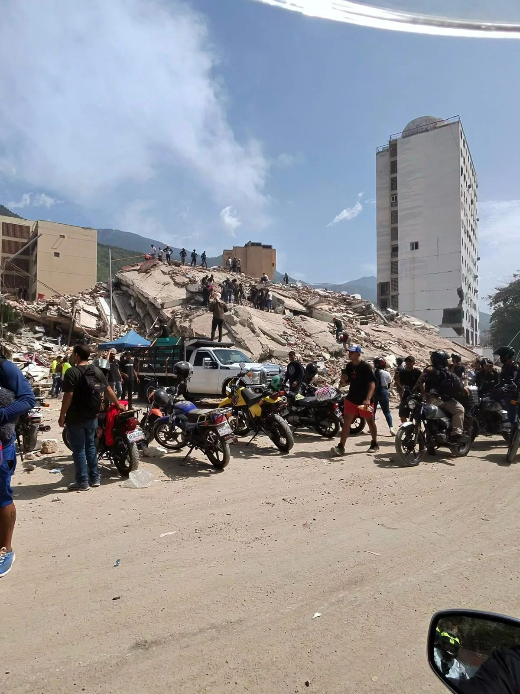

Water for All
Improving lives with much needed water in rural Wayuu communities across La Guajira, Venezuela.
Bringing Water to Those Who Need It
In rural areas where the largest Wayuu population villages are located, the water source is difficult to reach from their homes. As a result, most of the time, women and children have to walk long distances in the heat to fetch water.
To alleviate this crisis, The Wayuu Taya Foundation created the "Water for All" program. In this area, the majority of people have to purchase water. For every water truck delivery that a person purchases for themselves, we provide an additional one to schools, elderly centers, hospitals, and other locations through our "One for One" initiative.

The "One for One" Initiative
Community Purchase
In this area, the majority of people have to purchase water. For every water truck delivery that a person buys for themselves, we match it with a free delivery to those who cannot afford it.
Matched Donation
We provide an additional water truck delivery to schools, elderly centers, hospitals, and other locations — ensuring clean water reaches the most vulnerable members of every community.
Water for All in Action


Help us bring clean water to every community
Every liter of water you help deliver brings hope and health to families who need it most.